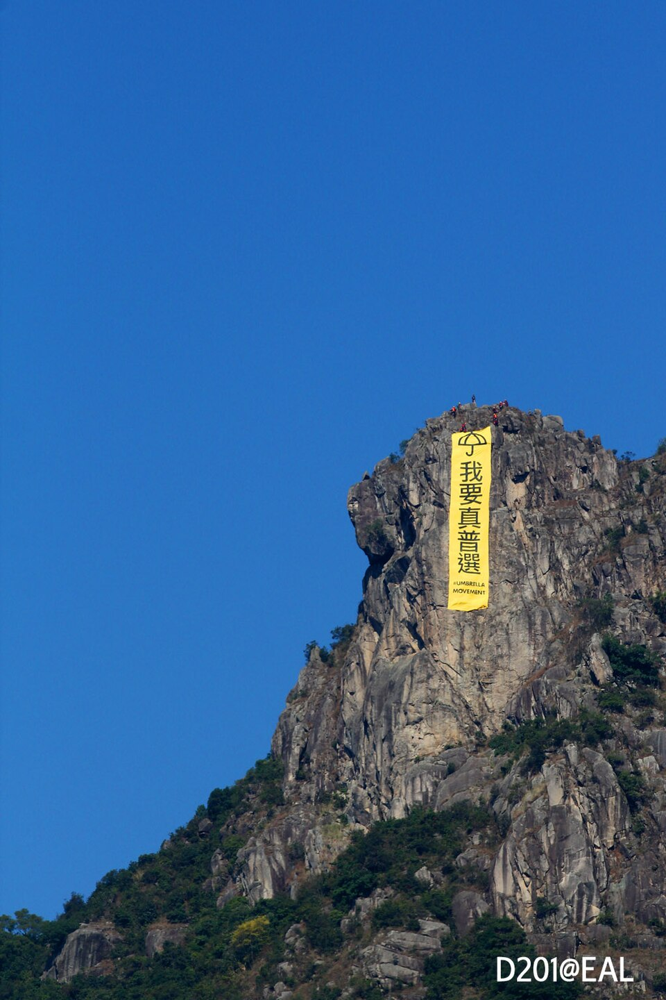

Gweilo · Lion Rock West Face · 獅子山 · 6a+ (HK), 4 wyc., ≈75 m
Klasyk HK (FA 1991). Start ze szczytu Prelude (F4). Wyciągi: 5 (22 m) · 6a+ rysa-zacięcie (12 m) · 5+ eksponowany trawers (13 m) · 6a+ (28 m) do szczytu. Zejście ścieżką turystyczną (bez zjazdów). Ok. 6 km od Dorsett (taxi 15–20 min do Lion Rock Park / Wang Tau Hom), podejście ≈ 30–40 min. Beacon Hill jest tuż obok (≈ 1 km).
Pasuje do planu? Tak — bez ograniczeń promowych; najlepiej zamiast/obok Beacon Hill w pon. 26 X (w dzień roboczy brak kolejek). Ruszcie wcześnie (upał, ekspozycja zach. po południu).
Stan spitów (najnowsze info):
- hongkongclimbing.com (ostrzeżenie „as of October 2020”): część spitów na wyc. 3 i 4 wybita, trawers wokół krawędzi bez ochrony, stanowisko szczytowe usunięte — trzeba zbudować własne (trad / pętle na blokach).
- theCrag: ostrzeżenie „Bolts chopped” z 3 X 2020; przy sąsiedniej Wards Groove wpis, że od 2025 wyc. 4 wymaga asekuracji trad + własne stanowisko na górze.
- UKC logbook: 16 XI 2023 — zespół wycofał się na początku wyc. 3 (wybite spity); 25 I 2024 — „last pitch was cut”; 16 XI 2024 — „Trad climbed it”.
- Brak znalezionych informacji o ponownym obiciu po 2020 (ostatnie obicie: F. Haden, I 2014 — Mountain Project).
Sprzęt (rekomendacja ostrożna, nasza — nie z topo): 15 ekspresów + 4–5 długich pętli, lina 60 m, kask; zestaw kości średnie–duże + friendy ok. 0.4–2 (BD) / „1.5–2.5 friends” wg hkclimbing — praktycznie 1× każdy rozmiar, ew. 2× #1–#2; 2 pętle 120 cm + karabinki HMS na stanowisko szczytowe. Jeśli nie macie tradu — tylko wyc. 1–2 i zjazd.
📖 Topo (hongkongclimbing.com) · theCrag · Mountain Project · ściana · 📍 Mapa / start